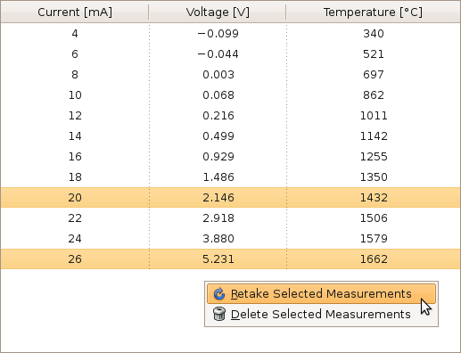

gui.calibration.table — Tabulates the calibration measurements
This module contains the MeasurementTableHandler class, which manages
a table that shows the measurements collected during the calibration
procedure. The handler also allows the user to delete selected measurements
and to start a new calibration procedure to retake selected measurements.
Clients need not actually deal with the MeasurementTableHandler
itself; instead, they can use the createMeasurementTable() function,
which creates the handler and returns the widget used for the table (a
gtk.TreeView). The table will be automatically updated when the
calibration data of the ProductionSystem passed to
the function changes.

-
gui.calibration.table.createMeasurementTable(system)
- Creates a MeasurementTableHandler and returns the widget it uses
for the table. system is the ProductionSystem whose
calibration measurements are to be shown.
-
class gui.calibration.table.MeasurementTableHandler(system)
- Creates a new instance of this class that shows the measurements collected
during the calibration of the given ProductionSystem.
-
MeasurementTableHandler.widget
- The gtk.TreeView used for the table. Immutable.
Constants
-
gui.calibration.table.COLUMN_TITLES
- A tuple that lists the localized titles for the columns that show the
heating current, temperature sensor voltage, and heating temperature.
-
gui.calibration.table.FRACTIONAL_DIGITS
- A tuple that lists the maximum number of fractional digits that are to
be used for heating currents, temperature sensor voltages, and heating
temperatures.
-
gui.calibration.table.TRIM_TRAILING_ZEROS
- A tuple that lists whether trailing zeros of the fractional part of the
heating currents, temperature sensor voltages, and heating temperatures
(and the dot, if there is no fractional part) should be omitted.